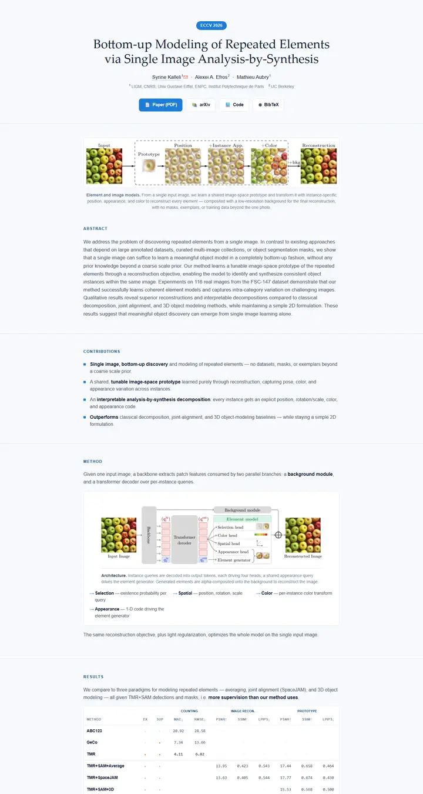

Bottom-up Modeling of Repeated Elements via Single Image Analysis-by-Synthesis
A blueprint index card: pale blue dot-grid paper, a bookish serif title, small-caps blue labels, and a single navy slab for the citation.

Checked against the rendered page. The BibTeX section itself carries the .bibtex class, so it renders as a full-width navy band with 10px corners and a low-contrast blue label; documented as rendered. No navigation bar.
Why it is here
Restrained light-blue academic page with a serif title, small-caps section labels, a well-captioned figure and a neatly typeset mono results table. A tidy minimal reference.
Overview
Color Palette
Typography
Palatino Linotype
Bottom-up Modeling of Repeated Elements via Single Image Analysis-by-S
Abstract · Method · Results · BibTeX — 0123456789
Arial
Bottom-up Modeling of Repeated Elements via Single Image Analysis-by-S
Abstract · Method · Results · BibTeX — 0123456789
Consolas
Bottom-up Modeling of Repeated Elements via Single Image Analysis-by-S
Abstract · Method · Results · BibTeX — 0123456789
Spacing & Shape
Page Modules
Guidelines
More like this

CRAFT: Training-Free Cascaded Retrieval for Tabular QA
A tidy product manual in pale blueprint blue, where every stage wears its own colored edge.

Efficient Self-Evaluation for Diffusion Language Models via Sequence Regeneration
A tidy stack of rounded cards washed in a blue-violet-apricot dawn, signed with a gradient wordmark.

FIGMA: Towards FIne-Grained Music retrievAl
A music journal on warm paper: a heavy Newsreader headline under a red kicker, big red serif numerals for the results, and figures resting in soft cream frames.

GuideDog: A Real-World Egocentric Multimodal Dataset for Blind and Low-Vision Accessibility-Aware Guidance
A quiet monograph page: one serif column, oxblood ink for the links, and a table that blushes only at its own row.

LaMI: Augmenting Large Language Models via Late Multi-Image Fusion
A careful conference handout: Noto Serif headings, navy outlined buttons and soft grey bands taking turns.

PairCoder++: Pair Programming as a Universal Paradigm for Verified Code-Driven Multimodal and Structured-Artifact Generation
A crisp white product page: a blue announcement strip, ink-black pill buttons and every figure on a soft-shadowed card.